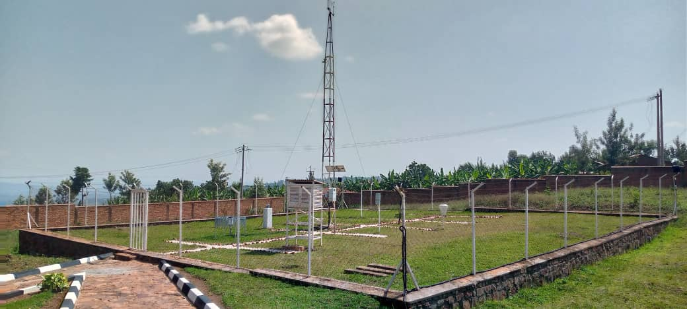
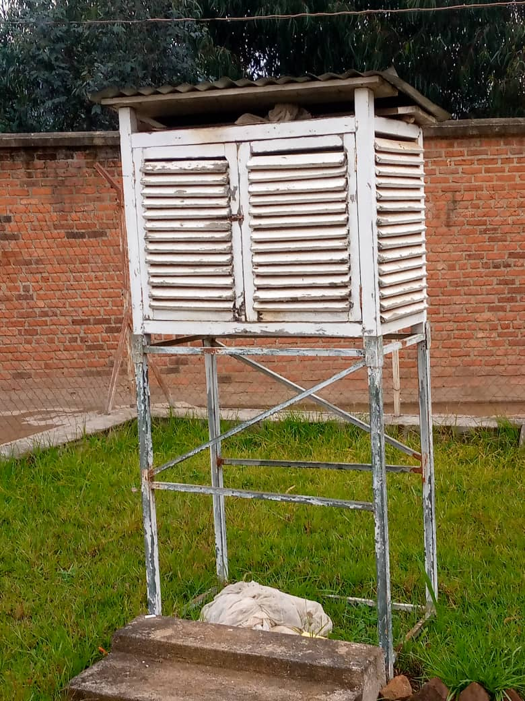
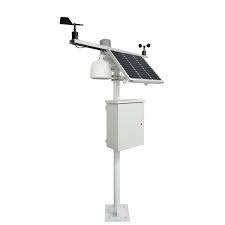
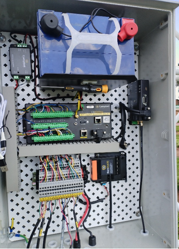
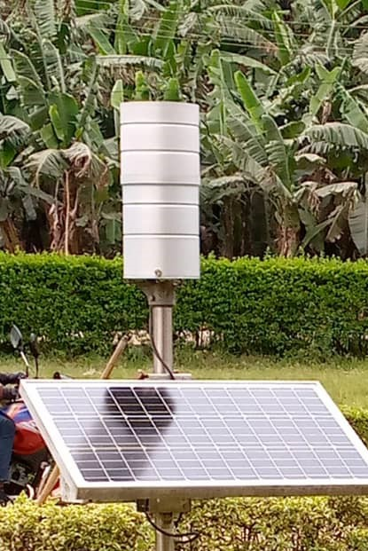
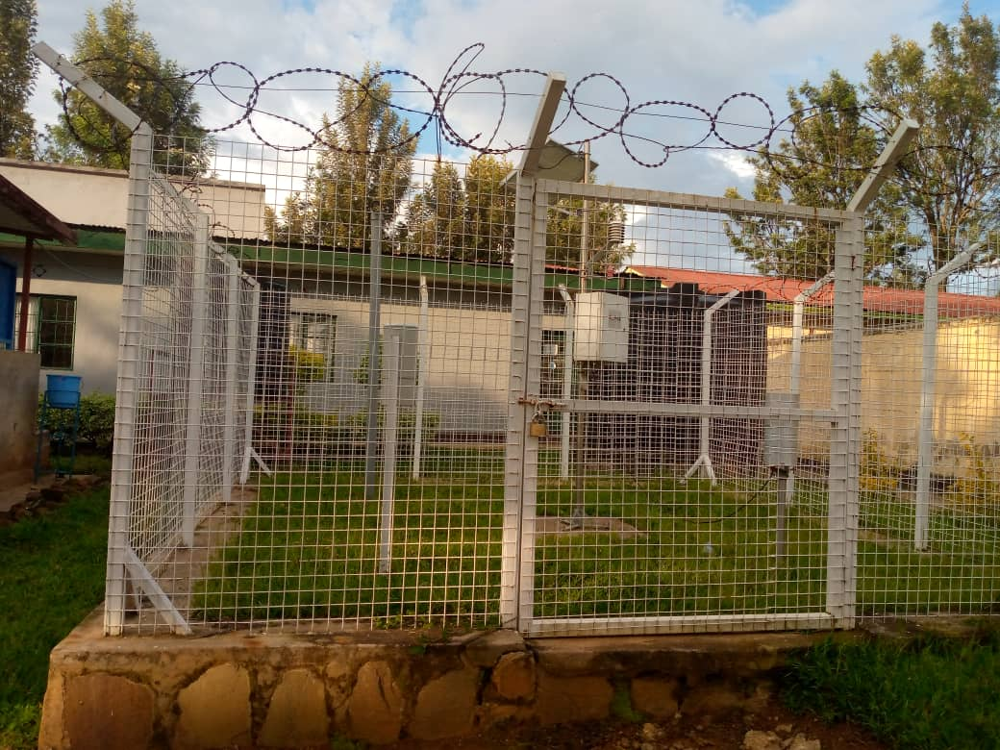

RWANDA OPERATIONAL STATIONS NETWORK
Owned by meteo Rwanda
PRINCIPAL STATIONS
13

Climsoft
VOLUNTEERS STATIONS
132

data.meteorwanda.gov.rw
Climsoft
Climsoft
AWS Monitor
44

AWS_WebMonintor_ATSserver
C:\NESA\files\Climat File
C:\NESA\files\Climat File
Upgraded By SOFF
3

AWS_SOFF_ATSserver
C:\Campbellsci\LoggerNet
C:\Campbellsci\LoggerNet
Automatic Rain Gauge
70

ARG_Elog_LSAServer
C:\DATA\XLOG
C:\DATA\XLOG
AWS with Lightning detector
8

AWS_Lightening_ATSserver
C:\NESA\files
C:\NESA\files
AWS With X and Evolution Log
6
AWS_X&Evolution_LSAServer
C:\DATA\XLOG
C:\DATA\XLOG
AWS With E-Log
3
AWS_Elog_LSAServer
C:\DATA\XLOG
C:\DATA\XLOG
Owned by partners
6
AWS_WebMonintor_ATSserver
C:\NESA\files\Climat File
C:\NESA\files\Climat File
3
AWS_WebMonintor_ATSserver
C:\NESA\files\Climat File
C:\NESA\files\Climat File
11
AWS_LSAServer/NAEB
C:\DATA\NAEB
C:\DATA\NAEB
10
AWS_LSAServer/MINAGRI
C:\DATA
C:\DATA
Under Research
2

ATSserver;C:\disdrometerdata
METEORWANDA
METEORWANDA
Summary of Stations
| Category | Operation | Non_Operational | Totally Closed | TOTAL |
|---|---|---|---|---|
| Manned_METEO | 145 | 0 | 128 | 273 |
| AWS_METEO | 74 | 0 | 0 | 74 |
| ARG | 70 | 15 | 8 to full AWS | 94 |
| Manned_Partners | 0 | 0TBD | 0TBD | 0TBD |
| AWS_Partners and Research | 32 | 0TBD | 0TBD | 0TBD |
| Total Station | 311 | 15 | 136 | 482 |
| Sites | 300/TBD | 300/TBD | 300/TBD | 300/TBD |